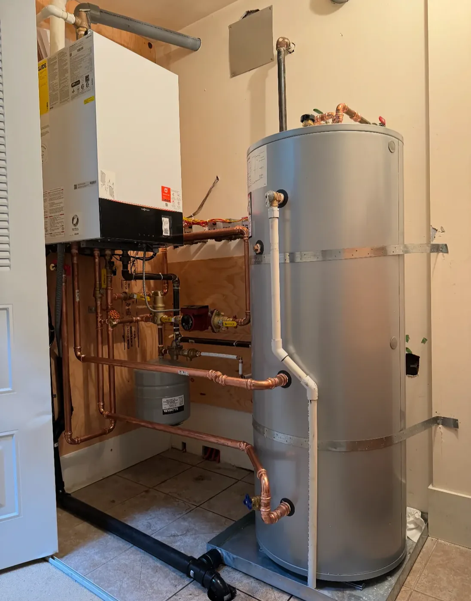

Boilers
Plenty of Burnaby heats with hot water rather than forced air. Radiators in the older houses, in-floor in the newer ones. Boiler work is its own trade, and we do it.
A boiler system is a loop. Water gets heated, a pump pushes it around the house, it gives up its heat at the radiators or the floor, and it comes back. When something goes wrong, the loop is either leaking, not circulating properly, or not getting heated in the first place. Working out which of those you have needs somebody standing in front of it, not a phone description.

What we get called for
- Pressure that keeps dropping and needs topping up
- No fire, or a burner that lights and drops out
- Some radiators hot, others cold
- Kettling, banging or a new hum
- Leaks at fittings or from the pressure relief valve
- Full replacement when the unit is finished
We also cover boiler repair on our main site's Burnaby boiler page.
Questions we get
What are the most common boiler problems?
Pressure that won't stay up, a unit that won't fire or won't hold a flame, some radiators hot while others stay cold, new noise, and leaks at fittings or the relief valve.
All of those are symptoms. Low pressure tells you water is leaving the system; it doesn't tell you where. That's why the first visit is a diagnosis rather than a repair.
How long does a boiler last?
That depends more on how it has been looked after than on the badge. Two identical units installed the same year can be in completely different shape a decade later, and the one that got serviced isn't usually the one giving trouble.
For a straight answer on your own boiler we'd want to see the model, the state of the heat exchanger, and what has been done to it since it went in.
Is it worth replacing a 20 year old boiler?
Age alone doesn't settle it. Four things do:
- Are parts still available for it?
- How does its efficiency compare with a current unit over a full winter?
- Is the heat exchanger sound?
- Is this the first repair, or the third in two years?
Discontinued parts or a failed heat exchanger usually mean replacement. A controls fault on an otherwise sound unit usually means repair. We'll tell you which one you've got.
What does a new boiler cost?
It comes down to the heat output the house actually needs, the type of boiler, whether the existing venting and gas line suit the new unit, and how much of the current system we can reuse.
Two houses on the same Burnaby street can differ substantially on venting alone. We quote after seeing the house, in writing, with what's included spelled out.
What does a boiler repair cost?
A service call, then parts and labour. Nobody can price the parts before the fault is found, so the diagnosis comes first and the repair price follows it.
Two things to ask any company you call: is the service call credited against the repair if you go ahead, and is there a callback charge if the same fault comes back.
Booking
Call (604) 299-5006, seven days a week between 8am and 8pm.